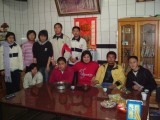

|
| 1. How do you catch fish? |
| We catch fish according to the tide, and the way we do it is dragnet. Dragnet can be divided into single-dragnet and double-dragnet. The dragnet differences affect what kinds of fish you would get. Generally Speaking, single-dragnet catches shrimps, crabs and flatfish while double-dragnet gets fish close to the sea surface, such as eels , hairtails. |
| 2. When do you sail out to fish and when do you come back? |
| The schedule depends on the tide, and sometimes the weather matters. If the weather isn’t fine, it’s common for us not to sail out for three or four days. Generally speaking, we just fish around the nearshore waters, so we always work less than 12 hours. If we don’t sail back within 12 hours, the fish won’t be fresh anymore. |
| 3. What kinds of fish can you catch, and how about the marketing? |
There are many sorts of fish you can get in Wunzai port. In addition to the general species, some appear seasonally, hairtails and crabs in fall and mullet in winter, for example. We often catch sharks and they have one or two hundred species.
As for marketing, fish are directly sold at port after they are caught. Some restaurant owners would pick up fish products here and familiar dealer would call for reservation as soon as the boats reach the port. Mostly, the fish products are all got and sold by the fishermen themselves in the local area. If the products are in large quantities, fishermen often send them to Taichung port for vendors to sell.
|
| 4. What are the specialities in Wunzai Port? |
| Mr. Huang said there isn’t actually a speciality here. The point the port is famous for is that the fish products are all alive while they are sold out. As long as the fish are fresh, customers don’t mind what kind of fish they are eating. When it comes to tell whether fish are fresh or not, Mr. Huang teaches us some tips. We often do it by checking the branchia is red or not because the color of branchia of frozen fish would turn light. However, certain vendors would dye the branchia, so the best way to judge is to see if there is a layer of membrane on the skin. There is usually a shiny layer when the fish are just caught. Therefore, don’t think the fish are not fresh when you touch the sticky layer. Besides, fish are hard or soft also determines their freshness. Fresh fish are whippy, not soft. |
| 5. What is the day routine of Wunzai Port? |
| As far as fishermen concerned, we sail out and spread the net according to radar. It can’t avoid net damage. Then, we sail back. When the boat reaches the shore, we begin to sell fish wholesale. If familiar dealers come, they usually hop to boats. The vendor at Wunzai Port sells most of fish products. Some people are responsible for merchanting and others for cleaning the boat. |
| 6. What activities did Wunzai Port ever hold? (The Mullet Festival and Get-Together ) |
Two or three years ago, the head of the township held the Mullet Festival. The activity mainly consists of clubs’ performing and some static display, such as the bionomic introduction of the mullet, teaching you how to use fishing tools, etc. However, after the activity, because the fisherman from Mainland China got vast quantity of mullet, this caused we people in Taiwan had few chance to catch them. So we don’t have this kind of activity anymore.
But the residents around Wunzai Port occasionally have get-together. “we just had it these days. In fact, we only asked some cooks to cook fish and we ate the food together around some several tables. There are also singing contest, performing, and annual fishing king rewarding activities in between,” said Mrs. Huang.
|
| 7. What are the customer sources of Wunzai Port? |
The quantity of Wunzai Port depends on the tide. The customers come from both residents and visitors, but many of them are regular ones. Those who taste the fresh seafood at Wunzai Port won’t be satisfied with frozen fish. “Visitors would count the right time based on the tide to pick up fresh products”, mentioned Mr. Huang.
Because of the tide changing, the vendors don’t have fixed working schedule. As long as the boats return to the port, they start to work and finish it when the customers are few or all products are sold. Therefore, if you want to try fresh seafood, be sure to check the tide schedule. |
| 8. As for the plans of Wunzai Port, what are your opinions? |
| When it comes to this point, Mr. and Mrs. Huang are quite satisfied, but the dislike the fishermen’s association a little bit. In the beginning, the vendors bought big umbrellas to fight rain and sunlight. Owing to the strong wind, the umbrellas fell down constantly. Besides, bug umbrellas are not convenient at all. Accordingly, the local vendors pay together to build a cabin. Mr. Huang says the fishermen’s association doesn’t take care of fishermen well. It just let them go. Only the unit responsible for developing polder helps the fishermen fix their boats and the place where they take a rest. However, the dock was in Changhua Coastal Industrial Park before, and China Engineering Company didn’t want to have any association with the dock, so they moved it to Wunzai Port. “In fact, the fishermen’s association doesn’t do anything for the local instruction; don’t mention other units. The illiterate fishermen don’t know where to ask for financial support. We are really helpless,” said Mr. Huang. |
| 9. How do you arrange the stalls? |
| The stalls belong to fishermen who sail out for fish products. Each fisherman owns a stall under the cabin. Sometimes, you would see the road crowded with stalls on holidays. “In fact, the venders come from other places. Because no one asks them to go away, they are used to setting stalls on holidays,” said Mrs.Huang. So, when you come here for fresh fish next time, choose the stalls under the cabin. |
|
|
 |
| Mr. Huang and Mrs. Huang |
 |
| Wei-Hiang is interviewing Mrs. Huang |
 |
| Miss Huang is interviewing Mrs. Huang |
 |
| Group picture |
 |
| Group picture |
|
|